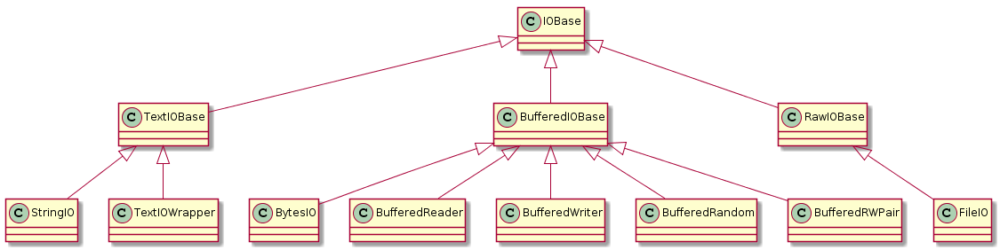

Python I/O
目录
1 简介
Python I/O 操作主要由模块 io 提供支持，在 Python3 中，内置函数 open 甚至就是 io.open 的别名。
这篇博客的主要内容就是对 io 模块的了解学习，并以 Python3 为主。
2 I/O 类型
I/O 主要有三种类型，分别为：
| 类型 | 作用 |
|---|---|
Text I/O |
操作 字符 流 |
Binary I/O |
操作 字节 流 |
Raw I/O |
操作 字节 流， 无缓冲区 |
Raw I/O 和另外两种 I/O 直观的区别就是是否存在 缓冲区, 因此，你可以通过禁用缓冲区来创建原始流：
f = open("myfile.jpg", "rb", buffering=0)
3 Base Class
io 模块通过类的层次结构实现这些 I/O 类型，最基本的四个类为： IOBase, RawIOBase, BufferedIOBase
和 TextIOBase.
它们之间的关系可以通过源码获得（文档也行）：
class IOBase(_io._IOBase, metaclass=abc.ABCMeta): __doc__ = _io._IOBase.__doc__ class RawIOBase(_io._RawIOBase, IOBase): __doc__ = _io._RawIOBase.__doc__ class BufferedIOBase(_io._BufferedIOBase, IOBase): __doc__ = _io._BufferedIOBase.__doc__ class TextIOBase(_io._TextIOBase, IOBase): __doc__ = _io._TextIOBase.__doc__
可以看到， IOBase 是一个 抽象类, RawIOBase, BufferedIOBase 和 TextIOBase 都继承自 IOBase.
对应到 I/O 类型的关系如下：
| 基类 | I/O 类型 |
|---|---|
RawIOBase |
Raw I/O |
BufferedIOBase |
Binary I/O |
TextIOBase |
Text I/O |
3.1 IOBase
IOBase 是所有 I/O 类的抽象基类，作用于字节流。我们不直接使用这个类，但可以了解这个类的字段和方法。
| 字段/方法 | 作用 |
|---|---|
closed |
如果流已关闭，则为 True |
close() |
刷新缓冲区（如果存在）并关闭流 |
fileno() |
获取流的 文件描述符, 不存在便抛出 OSError |
flush() |
刷新流的写缓冲区 |
isatty() |
如果流是交互式的，则返回 True |
readable() |
如果可以读取流，则返回 True |
readline(size=-1) |
从流中读取并返回一行， size 限定读取字节大小 |
readlines(hint=-1) |
从流中读取并返回行列表， hint 现在读取的行数 |
seek(offset[, whence]) |
更改流当前的字节偏移量 |
seekable() |
如果流支持随机访问，则返回 True |
tell() |
返回当前流的位置（字节偏移量） |
truncate(size=None) |
将流大小调整为给定大小，单位为字节，默认为流的当前位置 |
writable() |
如果流支持写入，则返回 True |
writelines(lines) |
写一个行列表到流（换行符需要自己添加） |
另外， IOBase 支持 上下文管理器, 即可以使用 with:
with open('spam.txt', 'w') as file: file.write('Spam and eggs!')
对于 seek, Python I/O 由 C 实现，因此和 C 基本一致：
SEEK_SET(0)- 流的开始SEEK_CUR(1)- 当前流的位置SEEK_END(2)- 流的结束
seek 的参数 offset 指定相对于 whence 指定的位置的 字节偏移量.
3.2 RawIOBase
RawIOBase 继承了 IOBase, 因此拥有 IOBase 的所有字段和方法，除此以外还提供一下方法：
| 方法 | 作用 |
|---|---|
read(size=-1) |
读取指定字节大小的内容，默认返回所有 |
readall() |
读取并返回流中的所有字节 |
readinto(b) |
将读取的字节存入对象 b, 并返回读取的字节数 |
write(b) |
将对象 b 中的字节写入流，并返回写入的字节数 |
Raw I/O 操作的是 字节流, 因此无论是写入还是读取的内容都是 类字节对象.
错误的数据会导致异常，如 str.
3.3 BufferedIOBase
BufferedIOBase 同样继承自 IOBase, 是支持某种缓冲的二进制流的基类。
BufferedIOBase 的方法和字段：
| 字段/方法 | 作用 |
|---|---|
raw |
BufferedIOBase 内部处理的 Raw I/O 流(RawIOBase) |
detach() |
将基础原始流与缓冲区分开并返回 |
read(size=-1) |
读取指定字节大小的内容，默认返回所有 |
readinto(b) |
将读取的字节存入对象 b, 并返回读取的字节数 |
write(b) |
将对象 b 中的字节写入流，并返回写入的字节数 |
方法 read 和 readinto 都有一个在后面加一个 1 的变形，分别为 read1 和 readinto1.
这两个变形进行 I/O 操作是最多只调用一次 Raw I/O 操作。
3.4 TextIOBase
TextIOBase 支持的是 字符流, 方法和字段如下：
| 字段/方法 | 作用 |
|---|---|
encoding |
字符编码格式 |
errors |
解码器或编码器的错误设置 |
newlines |
到目前为止已翻译的换行符 |
buffer |
TextIOBase 内部处理的 BufferedIOBase 对象 |
detach() |
将基础二进制缓冲区与TextIOBase分开并返回 |
read(size=-1) |
从流中读取指定数量的字符，默认读取所有 |
readline(size=-1) |
读取一行内容， size 指定最多读取的字符数量 |
seek(offset[, whence]) |
将流位置更改为给定的偏移量 |
tell() |
获取流的当前位置 |
write(s) |
将字符串写入流并返回写入字符数 |
4 具体实现
这三种 I/O 的具体实现还是不少的，这里不可能一一列举说明。但还是可以从源码了解具体实现有哪些：
RawIOBase.register(FileIO) # RawIOBase for klass in (BytesIO, BufferedReader, BufferedWriter, BufferedRandom, BufferedRWPair): BufferedIOBase.register(klass) # BufferedIOBase for klass in (StringIO, TextIOWrapper): TextIOBase.register(klass) # TextIOBase del klass try: from _io import _WindowsConsoleIO except ImportError: pass else: RawIOBase.register(_WindowsConsoleIO)
类之间的层次结构图：

剩下的内容简单介绍一下 BytesIO, StringIO 和 TextIOWrapper.
4.1 BytesIO
BytesIO 是 BufferedIOBase 的实现，除了继承自 BufferedIOBase 的内容外，还有：
- getbuffer()
获取缓冲区内容的可读写 视图
>>> b = io.BytesIO(b"abcdef") >>> view = b.getbuffer() >>> view[2:4] = b"56" >>> b.getvalue() b'ab56ef'
- getvalue()
- 获取包含缓冲区全部内容的
bytes对象
BytesIO 属于 I/O 对象，数据保存在 内存 中，有时，使用 BytesIO 来保存数据是一个很好的选择。
4.2 StringIO
StringIO 是 TextIOBase 的实现，你可想操作文件那样操作它，它的方法 getvalue 会返回包含
缓冲区全部内容的 字符串.
使用例：
import io output = io.StringIO() output.write('First line.\n') print('Second line.', file=output) # Retrieve file contents -- this will be # 'First line.\nSecond line.\n' contents = output.getvalue() # Close object and discard memory buffer -- # .getvalue() will now raise an exception. output.close()
4.3 TextIOWrapper
TextIOWrapper 是一个很重要的对象，平时我们通过 open('xxx') 获得就是这个对象。
它的第一个参数为一个 BufferedIOBase 对象，第二个参数为 encoding, 指定 编码格式.
通过使用 TextIOWrapper, 我们可以将一个 字节流 包装，指定 编码, 从而直接读写 字节流.
flask 的 json 实现中就有一段这样的代码：
def _wrap_writer_for_text(fp, encoding): try: fp.write('') except TypeError: fp = io.TextIOWrapper(fp, encoding) return fp
通过这样的方式，我们可以方便而安全的操作 I/O 对象。